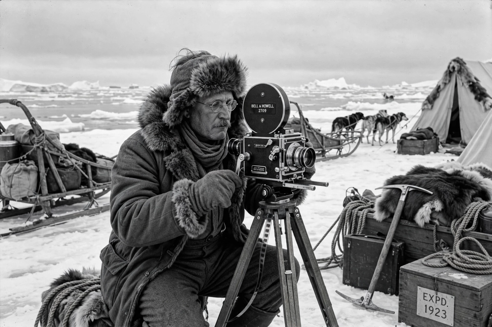

Robert J. Flaherty
 | |
| Born | Robert Joseph Flaherty, February 16, 1884, Iron Mountain, Michigan, U.S. |
|---|---|
| Died | July 23, 1951 (aged 67), Dummerston, Vermont, U.S. |
| Occupation | Filmmaker, explorer |
| Notable works | Nanook of the North (1922), Moana (1926), Man of Aran (1934), Louisiana Story (1948) |
Robert Joseph Flaherty (February 16, 1884 – July 23, 1951) was an American filmmaker who directed and produced the first commercially successful feature-length documentary film, Nanook of the North (1922). He is considered the "father of the documentary film."
Life and career
Flaherty was born in Iron Mountain, Michigan, and worked as a prospector and explorer in the Canadian Arctic for the Mackenzie railway interests, carrying a motion picture camera on expeditions from 1913. His early footage was destroyed in a fire caused by his cigarette igniting nitrate film, an accident that convinced him to return with a narrative plan.
Funded by the Revillon Frères fur company, he spent 1920–21 at Port Harrison (Inukjuak), Quebec, filming the life of the Inuk hunter Allakariallak, renamed "Nanook." Nanook of the North was an international sensation. Paramount then sent him to Samoa, where he made Moana (1926) — the film for which John Grierson coined the word "documentary." Later works include Tabu (1931, with F. W. Murnau), Man of Aran (1934), about the Aran Islands of Ireland, Elephant Boy (1937), The Land (1942), and his last film, Louisiana Story (1948), nominated for an Academy Award. Flaherty's practice of staging scenes blurred the line between documentary and fiction and remains debated by documentarians.